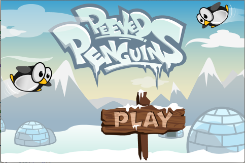

みなさま、こんばんは。
私にとってのキャンプの最初の一週間が終了しました。
このブログが日本にいる友だちだけでなく、こちらで出会った人にも読んでもらえて内容がとても気になる！と言ってもらえてとても嬉しかったです！
特にゲームに全く興味がない私がゲームを作っているのが面白いのだそうです。
今日はキャンプ中考えていたことのひとつとして、シリコンバレーでキャンプに参加する意味と英語の重要性について少しだけ書きたいと思いました。
何故わざわざシリコンバレーのキャンプに参加するのか。
同じようなことが日本でも学べるでしょうか。
答えは今のところYesが30%、Noが70%くらいかな？（笑）
まず言えることは、技術の差と情報の差が明らかでした。
世界中から技術者が集まるこの地では、日本で凄い・・・！と思ったような人の集まりでした！(゜o゜;
それから触れる情報が日本にいた時と違って、なんだかポツンと置いていかれているような感覚さえ味わされます。(T_T)
もともとゲームについては全く知識がないですけど。。
今私が使っているツールにしても、もちろん日本語訳なんてものはないし日本で同じような便利なツールが作られる様子も今のところなさそうです。
インストラクターの説明やチュートリアルをいちいち日本語に訳している時間はなく、訳しているうちにどんどん置いていかれます。（泣）
何故Yesが30%なのかというと、果たして今使っている「SpriteBuilder」、今後使うチャンスがあるのかしら？（笑）という気持ちも込めて30%です。
先日、ちょうどハフィントンで「英語とプログラミング、どちらを優先して学ぶべきか」という記事を見かけてとてもタイムリーな記事に思わずハッとさせられました。
記事の中身としては、「ライターの娘／息子さんはもう成人したのだけど、もしまだ子どもたちが小さいとしたら、英語とプログラミングのどちらを学ばせるか。-> たぶんプログラムを勉強しておけよ、と勧めたと思う。」といった内容でした。
記事はこちら今の私の感想としては、英語もプログラミングもどちらもツールですが
順番としては「プログラミングを学ぶために英語を学ぶ。」が一番しっくりくると感じました。
ところで今作っている「Angry Bird」のクローンですが、クローン品なので「Peeved Penguin（イライラしているペンギン）」ってキャンプの中では呼ばれています。
可愛いですよね！
もうすぐ完成・・・！
